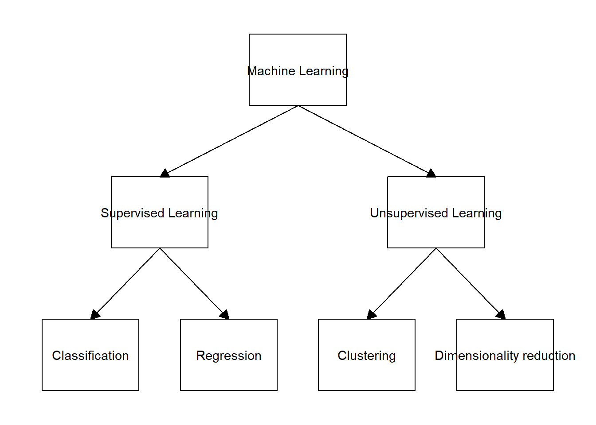
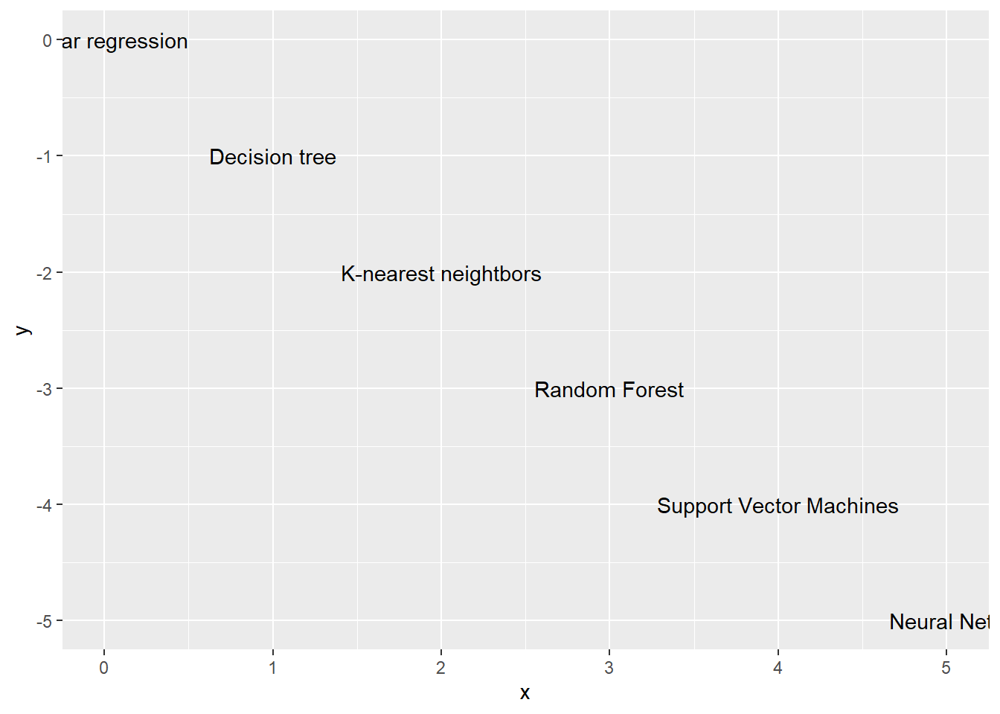

Capitulo 2 ¿Qué es Machine Learning?
El enfoque principal de este libro es exponer el uso de herramientas de machine learning para responder preguntar en biología. Sin embargo, aún no se ha definido formalmente que es machine learning. En pocas palabras, machine learning se refiere al uso de análisis estadísticos para hacer predicciones o inferencias sobre un problema en particular utilizando particiones específicas del conjunto de datos. Por lo tanto, el aspecto clave que distingue en general la práctica de machine learning respecta al uso de secciones de los datos con el objetivo de describir explícita y finamente el comportamiento y la generalización de los modelos.
Actualmente, las aplicaciones de machine learning se encuentran varios ámbitos demuestra vida diaria. Por ejemplo, cuando hablamos a nuestro celular para interactuar con Alexa (Amazon), Siri (Apple) o Google Maps, modelos entrenados utilizando un paradigma de machine learning permite que aquellas palabras que enunciamos sean interpretadas por el equipo (e.g., celular, computador) tras algunos pasos de codificación (e.g., creacion de matrices). Igualmente, Google Maps colecta datos de tráfico desde el punto en el que estamos al sitio en donde vamos para encontrar la ruta más rápido al lugar de destino. Como optimizar estas rutas tambien puede ser una tarea de machine learning. Así como estos ejemplos, hay cientos de situaciones que pueden ser usadas para ejemplificar el uso de machine learning en nuestra cotidianidad.
2.1 Tipos de machine learning
Dentro del machine learning, los problemas estadísticos generalmente se dividen en dos categorías principales: supervisadas y no supervisadas. La primera categoría, la supevisada, se refiere a que por cada observación del predictor (\(x\)), hay una medida de respuesta (\(y\)). Por el contrario, la categoría no supervisada hace referencia a que el predictor (x) no está asociado a una respuesta (y) - no tenemos una variable respuesta que pueda supervisar nuestro análisis. A lo largo del libro nos vamos a enfocar principalmente en la categoría de aprendizaje supervisado. Por otro lado, tambien se resalta que existen otras alternativas de aprendijaze en este tipo de sistemas (e.g. aprendizaje de refuerzo). Sin embargo, la ubicacion de estas aproximaciones es un poco mas ambigua con respecto a las dos principales discutidas en esta seccion.
data <- tibble::tibble(from = c("Machine Learning", "Machine Learning", "Supervised Learning", "Supervised Learning", "Unsupervised Learning", "Unsupervised Learning"),
to = c("Supervised Learning", "Unsupervised Learning", "Classification", "Regression", "Clustering", "Dimensionality reduction"))
ggflowchart(data)
2.2 Definiciones relevantes a machine learning
Al momento de utilizar modelos de machine learning debemos tener en cuenta que hay compromisos (conocidos como trade-offs en inglés). Este es el caso para la relación entre el trío de conceptos clave flexibilidad-interpretabilidad-complejidad. Entender la interacción de estos tres elementos juega un papel clave en la descripción de la generalización relativa de modelos y la definición de que tan apropiados son de acuerdo a las necesidades prácticas del investigador. Primero, la flexibilidad hace referencia a cuanto las características de los datos influencia al modelo, dado esto, algunos modelos lineales son más flexibles que otros. Por lo tanto, modelos más flexibles pueden ajustarse más cercanamente a los datos que funciones inflexibles. Sin embargo, la descripción muy ajustada de un modelo a un conjunto de datos puede implicar para este mismo modelo la incapacidad de generalización en otros conjuntos de datos. Es entonces importante considerar la necesidad de describir cercanamente un conjunto de datos sin dejar a un lado el objetivo amplio de generar modelos que permitan interpretar patrones en datos que aun no se examinan (i.e., generalización). Segundo, la interpretabilidad de un model se refiere a lo fácil o difícil que es entender como las variables influencian el resultado. En un sentido amplio, se puede decir que modelos más inflexibles son mas interpretables. La flexibilidad de un modelo tiende a aumentar a medida que la interpretabilidad disminuye. Por lo tanto, modelos más complejos tienden a no ser tan facilmente interpretables. Si el objetivo de quien analiza los datos es entender que predictores influencia la respuesta (e.g. analisis supervisados), modelos mas inflexibles (y por lo tanto menos complejos) son en general preferidos. Tercero, la complejidad hacer referencia tanto a la estructura de los modelos (e.g. cajas negras) como al número de parametros que se usan en un modelo determinado. Tener en cuenta los compromisos que ocurren entre flexibilidad, interpretabilidad y complejidad es central para entender patrones generales de seleccion de modelos dentro de un contexto de machine learning.
Otros tres conceptos para tener en cuenta cuando se usan modelos de machine learning son la varianza, el ruido, y el sesgo. Primero, la varianza hace referencia a la variacion intrinseca a generar predicciones con modelos. Por ejemplo, models inflexibles tienden a generar predicciones que son consistentes entre si (modelo relativamente con poca varianza). Modelos mas complejos tienden a producir predicciones mas discimiles entre si (modelo relativamente con alta varianza). Segundo, el ruido esta asociado a la variacion intrinseca a la variable de respuesta. Este aspecto es independiente al modelo y tiene en general mas relacion con errores de medicion que con otro aspecto. Tercero, el sesgo se refiere al error que se da a causa por aproximar un problema de la vida real, teniendo en cuenta el ruido. El sesgo es por lo tanto la relacion (i.e. diferencia) entre varianza y ruido. Este aspecto es relevante dado que los modelos son simplificaciones de datos y, aunque pueden estar cercanos a la realidad, siempre tendran limitaciones para llegar al modelo subyacente.
Otro concepto para tomar en cuenta cuando se esta eligiendo el método de aprendizaje estadístico es la maldición de la dimensionalidad. Este patron se refiere a los problemas que se dan a causa del aumento de variables independientes cuando en un set de datos. Debido a que al aumentar el número de dimensionas al modelo le toma más tiempo al modelo para computar el método de aprendizaje.
Subajuste y sobreajuste son otros conceptos para tomar en cuenta al momento de elegir nuestro método de aprendizaje. El subajuste hace referencia cuando el error del set de datos de entrenamiento es grande, mientras que es dice que uno modelos está sobreajustado cuando el error del set de datos de entrenamiento es bajo. En donde el promedio del error es el resultado del uso del método de aprendizaje estadístico para predecir la respuesta de una nueva observación. Nota: usualmente, modelos muy complejos pueden causar que es modelo este sobreajustado.
Al momento de elegir nuestro modelo de aprendizaje debemos de tener en cuenta dos tipos de errores, errores de entrenamiento y errores de prueba. Los errores de entrenamiento hacen referencia al error de los datos de entrenamiento, mientras que el error de prueba está asociado con el set observaciones. Algo que hay que tener en cuenta es que para las regresiones lineales y para las clasificaciones, no hay una relación entre el error de entrenamiento y el error de prueba.
x = seq(0,5,length.out=6)
y = -x
label = c("Linear regression",
"Decision tree", "K-nearest neightbors",
"Random Forest", "Support Vector Machines",
"Neural Nets")
data <- cbind.data.frame(x, y, label)
ggplot(data, aes(x = x, y = y, label = label)) + geom_text()
2.3 Tipos de particiones de datos en machine learning
El aprendizaje de maquina es de alguna forma el resultado del uso consciente de la informacion disponible, generalmente en forma tabular. En este campo, existen dos tipos de grupos de datos. Cada uno de estos deriva directamente de los datos totales colectados durante procesos investigativos. Primero, el conjunto de datos de entrenamiento, referido en ingles como train set, se usa en general para que el o los modelos puedan patrones que estan posiblemente presentes en los datos. Este conjunto de datos usualmente representa el 70% u 80% de los datos originales. Segundo, el conjunto de datos de prueba, tambien mencionado como test set en ingles, se usa para examinar la capacidad de generalizacion en el aprendizaje inicial llevado a cabo en el conjunto de datos de entrenamiento. Este conjunto de datos representa usualmente el resto de la informacion que no se ha usado en el conjunto de datos de prueba.
En pocas palabras, primero se entrena el modelo en el conjunto de datos de entrenamiento y despues de evalua su desempeño en el conjunto de datos de prueba. Estos conjuntos de datos tienen que ser conservados de forma independiente desde el principio de los analisis. Especificamente, el conjunto de datos de prueba tiene que servir como una fuente independiente de verificacion de que los patrones en el conjunto de datos de entrenamiento pueden extenderse a otros conjuntos de datos. Si se mezcla informacion entre estos conjuntos (fuga de datos o data leakeage), se pierde el sentido de este particionado.
Existen otros tipos de particiones de los conjuntos de datos de entrenamiento y prueba. Sin embargo estos dos conjuntos son los mas relevantes en muchos sentidos para el campo. Otras particiones (e.g. validacion) seran discutidas en capitulos subsecuentes cuando se revise el re-muestreo.
2.4 Introducción a los artículos y datasets que se usarán en este librillo
A lo largo de este librillo vamos a ilustrar ejemplos del uso de los diferentes métodos de aprendizaje estadístico utilizando set de datos que están publicados y disponibles para el público. Vamos a utilizar tres diferentes sets de datos el primero es un artículo liderado por Juan Carlos Copete y colaboradores, el cual está enfocado en entender la diversidad de comunidades de palmas en el Chocó biográficos. El segundo, fue liderado por Gustavo A. Londoño y colaboradores, en el cual este grupo de científicos buscaba entender los patrones de depredación de nidos en montañas del trópico. Por último, la tercera base de datos que vamos a usar fue liderada por Giovanny Ramirez y Jesus Orlando Rangel, en la cual estos investigadores buscaban entender la sucesión de plantas en un bosque del Chocó beogeográfico. Al final de cada uno de los capítulos vamos a tener ejemplos de cómo correr los diferentes análisis que se explican en el software R.
El artículo que vamos a usar para los ejemplos de machine learning tiene como título “Diversidad de comunidades de palmas en el Chocó biogeográfico y su relación con la precipitación”. En este artículo los autores utilizan datos de precipitación en 48 transectos en comunidades de palmas a lo largo del Chocó biogeográfico en 4 localidades en Colombia y Ecuador. Para esto, Juan Carlos Copete y colaboradores tomaron datos de precipitación promedio anual, número promedio de individuos por transecto, número de especies y promedio de especies por transecto. Esto con el fin de responder a la pregunta de que si existe una relación entre la riqueza y abundancia de palmas en el Chocó biogeográfico. En resumen, los autores encontraron que una que diversidad de palmas está influenciada por la precipitación, mientras que la abundancia esta negativamente influenciada por la precipitación, en donde solo una especie – no muy abundantes – pueden sobrevivir en lugares muy húmedo.
El segundo artículo que vamos a usar lleva como título “Changing patterns of nest predation and predator communities along a tropical elevation gradient” o “Patrones cambiantes de depredación de nidos y comunidades de depredadores a lo largo de un gradiente de elevación tropical” en español liderado por Gustavo A. Londoño y colaboradores. En este estudio los autores querían investigar si había cambios en los patrones y tipos de depredadores a lo largo de un gradiente altitudinal en bosque de Perú. Para esto, los autores utilizaron información sobre 2538 nidos que fueron monitoreados en el transcurso de seis años, desde el 2008 hasta el 2016. Además, durante ese mismo tiempo se tomaron fotografías y videos para cada uno de los nidos de los cuales 338 se tenía información de depredación. Igualmente, se tomaron datos de nido y composición del nido (si tenía huevos o polluelos). Los autores encontraron que a medida que la elevación aumenta la presión de depredación disminuye y l tipo de depredadores también cambia.
Por último, Giovanny Ramirez y Jesus Orlando Rangel realizaron un estudio titulado “Sucesión vegetal en áreas de minería a cielo abierto en el bosque pluvial tropical del departamento del Chocó, Colombia”. En este estudio los autores se enfocaron en caracterizar comunidades vegetales en minas que han sido abandonadas en diferentes tiempos (30, 15 y 5 años de abandono) con el fin de ver como patrones de abundancia y diversidad cambian con el tiempo de recuperación en el municipio de Condoto en Chocó. Para esto, se midió la altura de la vegetación y se identificaron las especies presentes en cada sitio de muestreo, además de medir la abundancia relativa de especies y la frecuencia de especies. Los autores encontraron que la riqueza, mientras que la abundancia disminuye ha medida que el tiempo de recuperación aumenta (30 años -> 15 años -> 5 años).
Esquemas: – Diagrama de supervisado vs no supervisado (Ok) – Esquema conceptual complejidad vs interpretabilidad (Ok) – Diagrama de tejo (TBD) – Maldicion de la dimensionalidad (TBD) – Todavía sigo buscando uno para regresión lineal, los que estan ahora son los de habíamos dicho al principi